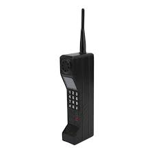
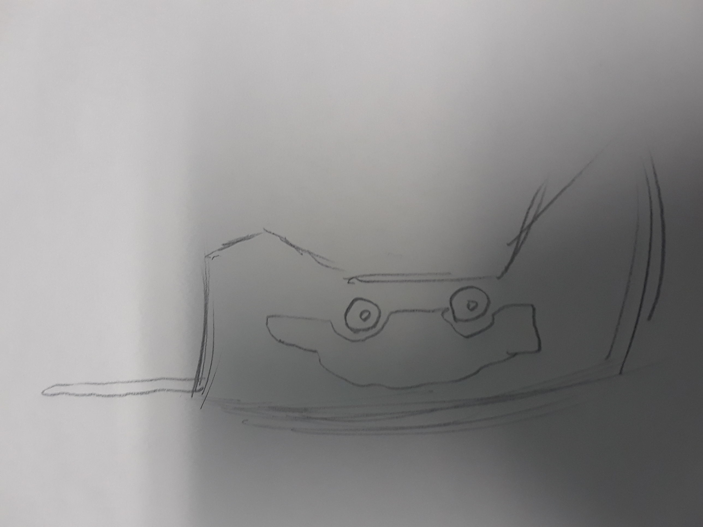

A man by the name of Elon Jobs has created the most successful company
in the world Tapple a company that speciallized in the creation of phone
cars. Cars that could transform into a cellphone the size of an average
brick. While everyone is running around saying how awesome these phone
cars are us here at The Local Paper are learning about the dark
routes of this beloved company.

It all started in the ripe year of 1989 Elon Jobs realized that purchasing
a cell phone and an automobile was a massive hassel. One night after his
ninth shower of the day he slipped while exiting the bathroom and got
knocked out. While knocked out he saw the first phone car in a vision and
when he came to he started drawing the schematics of the it. The next day
he ran over to his best friend and best colleague Steve Musk to start
building it.
After completing the first prototype they were ready to show it to the public when Steve got
sick. With his partner sick and him being impatient Elon decided to show the prototype to the public
without Steve. Elon continued developing the phone car without Steve and started selling them in
1993 under the brand of Tapple. When Steve found out he decided that he could beat Elon
at his own game, he decided to create the car phone.
This was an average cellphone that could transform into a one person vehicle and Steve sold
these under the brand Appla. In the end both companies have seprate demographics and are both
decently successful but at the end of the day Most people prefer to have their cellphone and car
separte.